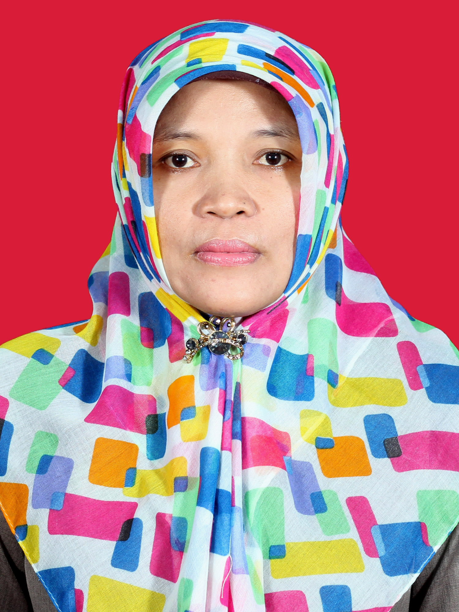
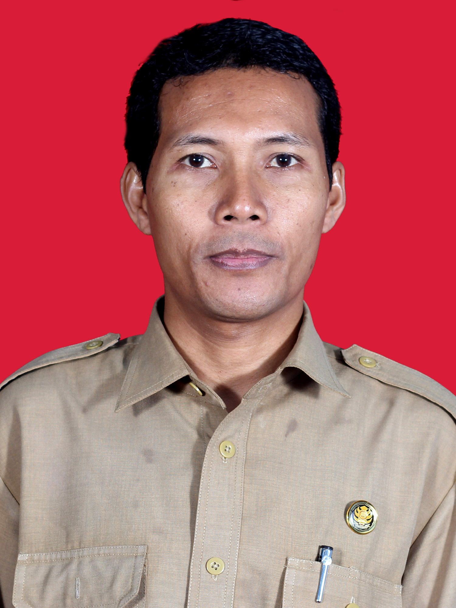
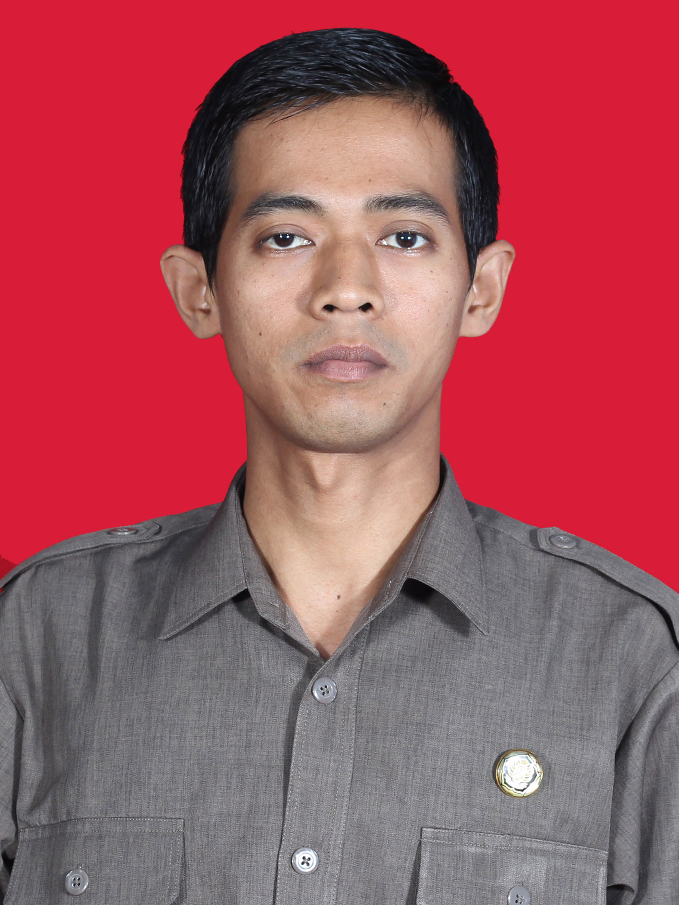
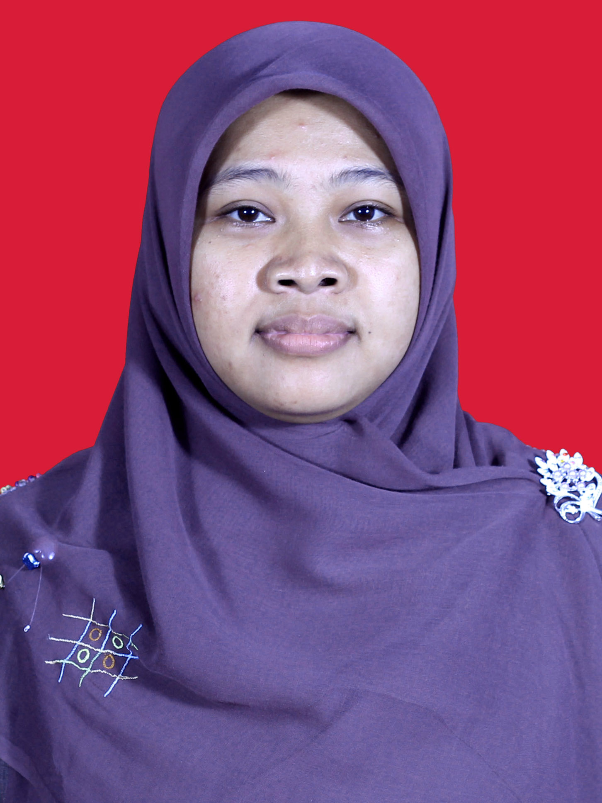

| 1 |
|
Dra.Samsiyati |
Bahasa Indonesia |
Strata 1 (S1) |
Perum griya Bukateja Rt5/10 Purbalingga |
1995 |
| 2 |
|
Dra. Sri Astutik |
Kewirausahaan |
Strata 1 (S1) |
Perum Babakan Purbalingga |
1998 |
| 3 |
|
Agus Rianto, S.Pd |
Olahrga |
Strata 1 (S1) |
Desa Susukan Kab. Banjarnegara |
1995 |
| 4 |
|
Hartono, S.Pd |
Gambar Teknik |
Strata 1 (S1) |
Desa Kalikabong Rt01 Rw 01 Purbalingga |
1996 |
| 5 |
|
Ruspan, S.Pd |
Kewirausahaan |
Strata 1 (S1) |
Desa Somawangi RT.01 / RW.04, kec. mandiraja, kab.Banjarnegara |
2000 |
| 6 |
 |
Tuti Setiani S.Pd |
Fisika |
Strata 1 (S1) |
Desa Klampok RT.03 / RW.05, kab.Banjarnegara |
2000 |
| 7 |
|
Saptono, S.Pd |
Ilmu Penfetahuan Sosial |
Strata 1 (S1) |
Desa Karang Tengah RT.03 / RW.02, kab.Banjarnegara |
1998 |
| 8 |
|
Febrian Syamsu H., S.Pd |
Bahasa Inggris |
Strata 1 (S1) |
Desa Klampok Rt 01 Rw 11kab.Banjarnegara |
2004 |
| 9 |
|
Sri Handayani L., S.Pd |
Bahasa Jawa |
Strata 1 (S1) |
Desa Blimbing RT.06 / RW.01, kec. mandiraja, kab.Banjarnegara |
2005 |
| 10 |
|
M.Dani Ismail, S.Pd |
Bahasa Inggris |
Strata 1 (S1) |
Jl.APendidikan Kewarganegaraanrsantoka No.28 Purwokerto |
2005 |
| 11 |
|
Eko Walujono, S.H |
Pendidikan Kewarganegaraan |
Strata 1 (S1) |
Desa Kalimandi Rt 01 Rw 01 Klampok |
2006 |
| 12 |
|
Wahyudin, S.Pd.i |
Pendidikan Agama Islam |
Strata 1 (S1) |
Desa Derik Susukan kab.Banjarnegara |
2007 |
| 13 |
|
Sigit Purnomo, S.Pd |
Olah Raga |
Strata 1 (S1) |
Desa Gumelem Wetan Rt 1 Rw 5 Banjarnegara |
2007 |
| 14 |
|
Dian Nugrahaini, S.Pd |
Matematika |
Strata 1 (S1) |
Desa kalilandak Rt 2 Rw 2 Banjarnegara |
2007 |
| 15 |
 |
Agus Suryanto, S,Sos |
Ilmu Pengetahuan Sosial |
Strata 1 (S1) |
Desa Serayularangan Rt 1 Rw 1 Purbalingga |
2007 |
| 16 |
 |
Tulus Prayitno, S.Pd |
Fisika |
Strata 1 (S1) |
Desa Mandiraja Kulon Rt 5 Rw 3 Banjarnegara |
2007 |
| 17 |
|
Mukhaemah Waluyanti, S.Pd |
Bimbingan Konseling |
Strata 1 (S1) |
Kecitran Rt 4 Rw 3 Banjarnegara |
2007 |
| 18 |
|
Kusuma Puri Wardani, S.Psi |
Bimbingan Konseling |
Strata 1 (S1) |
Perum Gumuruh Banjarnegara |
2007 |
| 19 |
|
Rina Sulityani, S.Pd |
Kewirausahaan |
Strata 1 (S1) |
Desa kembangan Rt 5 Rw 3 Purbalingga |
2007 |
| 20 |
|
Hersin Widyaningsih, S.Pd |
Matematika |
Strata 1 (S1) |
Desa Klampok Rt 1 Rw 13 Banjarnegara |
1998 |
| 21 |
|
Septi Rahmawati, S.Pd |
Matematika |
Strata 1 (S1) |
Desa Glempang Rt 1 Rw 2 Banjarnegara |
2009 |
| 22 |
|
Mardiana Apsari, S.Pd |
Bahasa Inggris |
Strata 1 (S1) |
Desa Purwareja Rt 1 Rw 3 Banjarnegara |
2009 |
| 23 |
|
Dyah Ayu Mardiyanti, S.Pd |
Bahasa Inggris |
Strata 1 (S1) |
Desa Klampok Rt 1 Rw 7 Banjarnegara |
2009 |
| 24 |
|
Wahyu Suci Purnama Dewi, S.Pd |
Bahasa Inggris |
Strata 1 (S1) |
Desa Klampok Rt 2 Rw 11 Banjarnegara |
2009 |
| 25 |
|
Anggiriani Agustin P.S., S.Pd |
Seni Budaya |
Strata 1 (S1) |
Desa Klampok Rt 2 Rw 13 Banjarnegara |
2010 |
| 26 |
|
Falahudin Al Fuady, S.Pd |
Bahasa Jepang |
Strata 1 (S1) |
Desa Somawangi Rt 3 Rw 4 Banjarnegara |
2010 |
| 27 |
|
Tekun Widodo, S.Pd |
Matematika |
Strata 1 (S1) |
Desa Wanadadi Rt 1 Rw 7 Banjarnegara |
2010 |
| 28 |
|
Dheni Dwi Yuli Hastuti, S.Pd |
Bahasa Indonesia |
Strata 1 (S1) |
Desa Kecitran Rt 3 Rw 1 Banjarnegara |
2010 |
| 29 |
|
Khafid Hisyamudin, S.Pd.Jas |
Penjaskes |
Strata 1 (S1) |
Desa Merden Rt 6 Rw 8 Banjarnegara |
2010 |
| 30 |
 |
Runtut Setya Wardani, S.Pd |
Bahasa Indonesia |
Strata 1 (S1) |
Desa Salamerta Rt 1 Rw 2 Banjarnegara |
2011 |
| 31 |
|
Zuli Musrifah, S.Pd |
Fisika |
Strata 1 (S1) |
Desa Purwabdaru Rt 4 Rw 4 Banjarnegara |
2009 |
| 32 |
 |
Kusmiarti, S.Pd.I |
Pendidikan Agama Islam |
Strata 1 (S1) |
Desa Susukan Rt 2 Rw 6 Banjarnegara |
2013 |
| 33 |
|
Tutun Yuliah, S.Pd |
Pendidikan Kewarganegaraan |
Strata 1 (S1) |
Desa Purwonegoro Rt 3 Rw 2 Banjarnegara |
2009 |